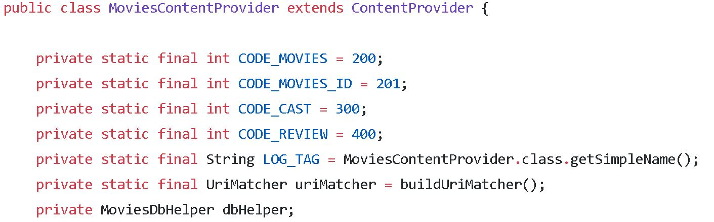
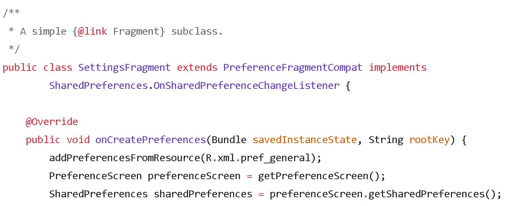

Cinematik
Mobile / UX
intro
This is the second project in Udacity's Android Developer Nanodegree. The purpose of this project was to built an app to help users discover popular and highly rated movies on the web. This app utilizes core Android user interface components and fetches movie information from themoviedb.org web API.
Objective: build a clean UI, sync to a server and present information about movies
Duration: 2 weeks
Tools used: Android Studio, Adobe XD & Photoshop
Final product showcase: an app that displays popular and recently launched movies
features
With the app, the user can:
- see a grid arrangement of movie posters upon launch
- change the sort order via a setting, by most popular or by highest-rated
- access additional details on a movie with a simple click (e.g. original title, screenshots)
- play trailers
- read reviews of a selected movie
- mark a movie as a favorite in the details view by tapping the star button
- jump from one sorting criteria to the other and see their favorites collection
project requirements
- Project is written using only Java
- JDK 1.8
- Android SDK
- Android Nougat (API 25)
- Latest Android SDK Tools (Android studio 3.0 canary) and build tools
implementation
The project uses the following functionality features:
- ContentProvider to manage access to data (movie information) stored in the SQLite Database
- Third-party libraries (e.g. Sthetho, Picasso)
- Fragments to create a responsive design that works on phones and tablets

Data persistance
The Android application makes a request of the movie database from the network and saves the data in the local storage as SharedPreferences. This data is then presented to the user in a RecyclerView.
UI
The UI is using responsive design and material design guidelines, for phone and tablet screens.
screenshots
The full project can be found here